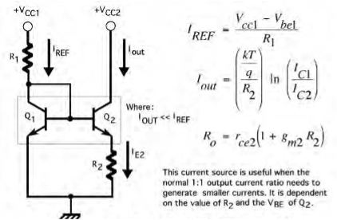
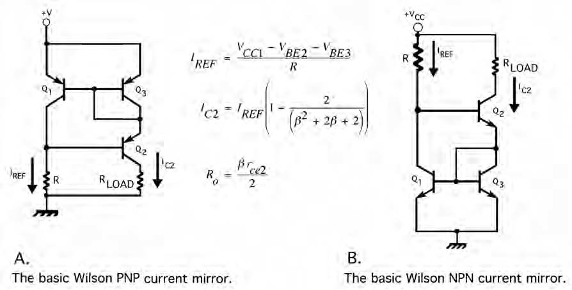
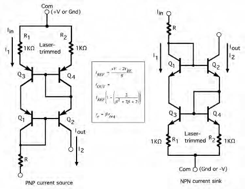

Widlar Current Source and Wilson Current Mirror#
1. Introduction#
What is a Current Source?#
A current source is a circuit that provides a constant current, regardless of changes in load resistance or voltage across it. It is a fundamental component in analog circuits for tasks like biasing, signal regulation, and voltage references.
Two significant current sources include:
Widlar Current Source (developed by Bob Widlar)
Wilson Current Mirror (developed by George Wilson)
In this project , we will explain the concepts, circuit design, advantages, and detailed working principles of these two circuits.
2. Widlar Current Source#
Overview#
The Widlar current source is an improvement on the basic current source. It was designed by Bob Widlar in the 1960s to address limitations in op-amp biasing circuits. Widlar’s design adds simplicity and efficiency for producing low output currents with higher precision and stability.
Features of Widlar Current Source#
Emitter Degeneration: Addition of resistor \(R_2\) reduces the output current.
Output Resistance: Higher than simple current sources, ranging from 10 kΩ to 100 kΩ.
Small Output Currents: Ideal for producing small currents, typically between 10 μA to 500 μA.
Temperature Proportional Behavior: Current output depends on absolute temperature (IPTAT).
\(V_{BE}\) Compensation: Helps compensate for transistor mismatches.
The Widlar current source circuit adds resistor \(R_2\) at the emitter of Q2, which creates a voltage drop that limits the output current \(I_{C2}\) below the reference current \(I_{REF}\).

Calculations:#
Kirchhoff’s Current Law (KCL): $\( I_{\text{ref}} = I_{C1} + I_{B1} + I_{B2} \tag{1} \)$
Kirchhoff’s Voltage Law (KVL): $\( V_{BE1} = V_{BE2} + R_E I_{E2} \tag{2} \)$
From the exponential relation: $\( I_{C1} = I_{S1} e^{\frac{V_{BE1}}{V_T}} \implies V_{BE1} = V_T \ln{\left( \frac{I_{C1}}{I_{S1}} \right)} \tag{3} \)$
Substitute (3) and (4) into (2): $\( V_T \ln{\left( \frac{I_{C1}}{I_{S1}} \right)} = V_T \ln{\left( \frac{I_{C2}}{I_{S2}} \right)} + R_E I_{E2} \)$
Since $\( I_{S1} = I_{S2} \)\(, we have: \)\( V_T \ln{\left( \frac{I_{C1}}{I_{C2}} \right)} = R_E I_{E2} \)$
Rewriting $\( I_{\text{ref}} :\)\( \)\( I_{\text{ref}} = I_{C1} + \frac{I_{C1}}{\beta} + \frac{I_{C2}}{\beta} \implies I_{\text{ref}} - \frac{I_{C2}}{\beta} = \left( 1 + \frac{1}{\beta} \right) I_{C1} \)$
Substitute (6) into (5): $\( V_T \ln{\left( \frac{\beta I_{\text{ref}} - I_{C2}}{(\beta + 1) I_{C2}} \right)} = R_E I_{E2} \)$
Exact Expression:#
How the Widlar Current Source Works#
Emitter Degeneration:
Resistor \(R_2\) introduces a voltage drop across the emitter of Q2. This voltage drop reduces the collector current \(I_{C2}\), which becomes smaller than \(I_{REF}\).
Current Division:
The relationship between \(I_{REF}\), \(I_{C2}\), and \(R_2\) is defined using the thermal voltage \(V_T\): $\( I_{C2} = I_{REF} \cdot \exp\left(-\frac{V_{R2}}{V_T}\right) \)$ Where:
\(V_{R2}\) is the voltage drop across \(R_2\), calculated as \(I_{C2} \cdot R_2\).
\(V_T \approx 26 \ \text{mV}\) at room temperature.
Output Resistance:
Adding \(R_2\) increases the output resistance of the circuit, making it more stable compared to a basic current source. The output resistance typically ranges between 10 kΩ to 100 kΩ.
Temperature Compensation:
Since the current depends on \(V_T\) (which is temperature proportional), the circuit behaves proportionally with temperature (IPTAT).
3. Wilson Current Mirror#
Overview#
The Wilson current mirror improves upon the simple current mirror by providing:
Higher accuracy
Higher output resistance
Low sensitivity to transistor gain mismatches (beta compensation).
Developed by George Wilson, this design is widely used in precision analog circuits.
Features of Wilson Current Mirror#
Beta Compensation: Reduces the sensitivity to variations in transistor gain.
High Output Resistance: Increases stability, with resistance ranging from 100 kΩ to several MΩ.
Improved Accuracy: Mirrors the reference current with excellent precision.
Feedback Regulation: Uses negative feedback to stabilize the current.
Types of Wilson Current Mirrors#
Basic Wilson Current Mirror: Uses 3 transistors (\(Q_1\), \(Q_2\), \(Q_3\)).
Full Wilson Current Mirror: Uses 4 transistors for enhanced output resistance and performance.
Basic Wilson Current Mirror#
Circuit Configuration#
\(Q_1\): Forms the input reference branch.
\(Q_2\): Provides negative feedback to stabilize current.
\(Q_3\): Mirrors the current to the output branch.

How It Works#
The reference current \(I_{REF}\) flows through \(Q_1\).
\(Q_2\) ensures that \(Q_3\)’s output current matches the reference current, thanks to negative feedback.
Full Wilson Current Mirror#
The Full Wilson Current Mirror uses 4 transistors (\(Q_1\), \(Q_2\), \(Q_3\), and \(Q_4\)). It adds additional feedback to further increase the output resistance and accuracy.
Key Features:#
Emitter Degeneration: Small resistors are added to compensate for \(V_{BE}\) mismatches.
Very High Output Resistance: Ranges from hundreds of kilo-ohms to mega-ohms.

Comparison: Basic Wilson Mirror vs Full Wilson Mirror#
Feature |
Basic Wilson Mirror |
Full Wilson Mirror |
|---|---|---|
Transistors Used |
3 |
4 |
Output Resistance |
High (kΩ range) |
Very High (MΩ range) |
Accuracy |
Good |
Excellent |
Beta Compensation |
Present |
Enhanced |
Complexity |
Low |
Moderate |
4. Conclusion#
The Widlar Current Source and Wilson Current Mirror are two significant advancements in current source design, addressing limitations of basic current sources and mirrors:
Widlar Current Source:
Provides small, stable output currents with high output resistance.
Introduces emitter degeneration for precision control.
Wilson Current Mirror:
Offers excellent accuracy and stability with high output resistance.
Incorporates feedback regulation and beta compensation to minimize gain mismatches.
The Full Wilson Mirror further improves performance with enhanced output resistance and compensation features.
These innovations laid the foundation for modern analog circuit designs, enabling reliable and efficient biasing in integrated circuits.
Sources#
Current Sources and Voltage References: A Design Reference for Electronics Engineers 1st Edition by Linden T. Harrison ALL ABOUT ELECTRONICS YouTube Channel (https://www.youtube.com/@ALLABOUTELECTRONICS)